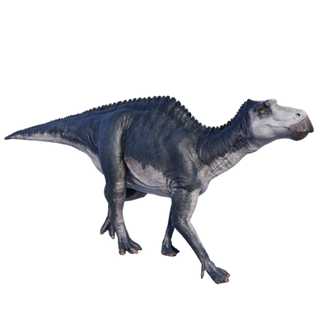

Useful Website
Maiasaura’s name translates to ‘good mother lizard’, as it was the first dinosaur to show evidence of feeding hatchlings while they were still in the nest. Notable for having a bill rather than a snout or nose, Maiasaura was a large herbivore (growing up to 9m in length and weighing in excess of 900kg) that fed on leaves, branches, ferns and other plants.
